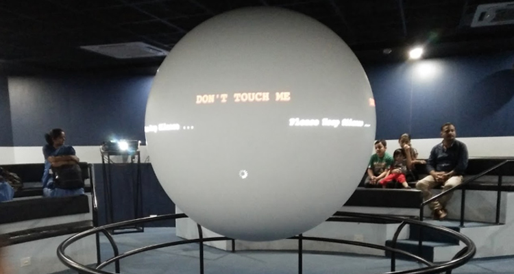
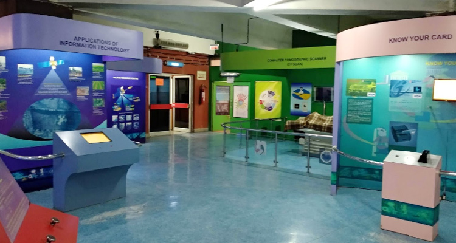
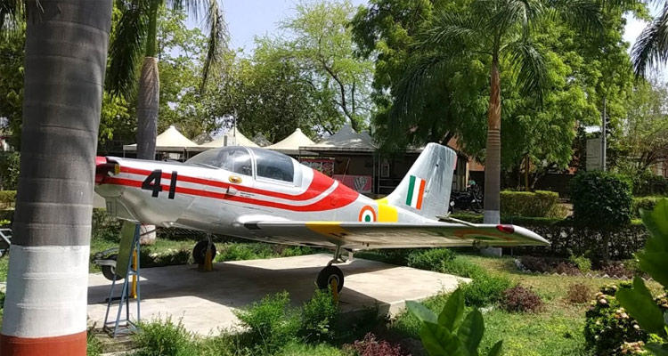
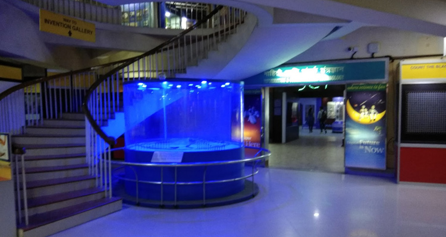

The Raman Science Centre and Planetarium Complex is an interactive science centre that hosts science exhibitions
and fosters scientific attitudes and the expansion of science and technology in many industries and people's
livelihoods. It is a popular tourist destination in Nagpur, attracting visitors from all over the world.
It is named after the Nobel Prize-winning physician- Chandrasekhar Venkata Raman. It's a place where kids can
play,
and grown-ups can learn something new while brushing up their scientific expertise. Every day, four planetarium
shows and four 3-D shows are held here.
There is a prehistoric animal park where light and sound shows are held three days a week (Wednesday, Friday,
and
Sunday) after sunset.
A fun scientific display is also available, including exhibits such as a virtual book, floor piano, plasma
globe,
and more. The centre now has three interactive galleries, including a 133-seat planetarium, an ancient animal
park,
and
various other activities. In addition, it gives out the Green Finger Award in partnership with the local NGO
Hirwai to
raise
awareness among school-aged children.
| Day | Timing |
|---|---|
| Monday | 11:30 am – 7:00 pm (Mar - Oct) 10:30 am – 6:00 pm (Nov - Feb) |
| Tuesday | 11:30 am – 7:00 pm (Mar - Oct) 10:30 am – 6:00 pm (Nov - Feb) |
| Wednesday | 11:30 am – 7:00 pm (Mar - Oct) 10:30 am – 6:00 pm (Nov - Feb) |
| Thursday | 11:30 am – 7:00 pm (Mar - Oct) 10:30 am – 6:00 pm (Nov - Feb) |
| Friday | 11:30 am – 7:00 pm (Mar - Oct) 10:30 am – 6:00 pm (Nov - Feb) |
| Saturday | 11:30 am – 7:00 pm (Mar - Oct) 10:30 am – 6:00 pm (Nov - Feb) |
| Sunday | 11:30 am – 7:00 pm (Mar - Oct) 10:30 am – 6:00 pm (Nov - Feb) |
|  |  |  |
|  |